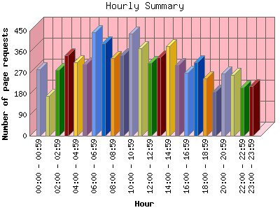

Analog 5.31
Analog 5.31 Report Magic 2.16
Report Magic 2.16The Hourly Summary identifies the level of activity broken down by each hour. Remember that one page hit can result in several server requests as the images for each page are loaded. This summary also compares the level of activity during working hours and after hours as a total for the report time frame.

| Hour | Number of page requests | Percentage of the bytes | |
|---|---|---|---|
| 1. | 00:00 - 00:59 | 284 | 2.67% |
| 2. | 01:00 - 01:59 | 170 | 1.34% |
| 3. | 02:00 - 02:59 | 281 | 2.09% |
| 4. | 03:00 - 03:59 | 346 | 3.36% |
| 5. | 04:00 - 04:59 | 315 | 2.86% |
| 6. | 05:00 - 05:59 | 307 | 6.35% |
| 7. | 06:00 - 06:59 | 444 | 7.09% |
| 8. | 07:00 - 07:59 | 396 | 4.22% |
| 9. | 08:00 - 08:59 | 332 | 5.44% |
| 10. | 09:00 - 09:59 | 345 | 4.13% |
| 11. | 10:00 - 10:59 | 439 | 5.13% |
| 12. | 11:00 - 11:59 | 375 | 6.12% |
| 13. | 12:00 - 12:59 | 313 | 4.99% |
| 14. | 13:00 - 13:59 | 336 | 6.89% |
| 15. | 14:00 - 14:59 | 384 | 5.36% |
| 16. | 15:00 - 15:59 | 304 | 7.00% |
| 17. | 16:00 - 16:59 | 270 | 4.45% |
| 18. | 17:00 - 17:59 | 314 | 3.50% |
| 19. | 18:00 - 18:59 | 247 | 2.76% |
| 20. | 19:00 - 19:59 | 188 | 1.70% |
| 21. | 20:00 - 20:59 | 267 | 4.29% |
| 22. | 21:00 - 21:59 | 261 | 4.69% |
| 23. | 22:00 - 22:59 | 206 | 1.91% |
| 24. | 23:00 - 23:59 | 213 | 1.66% |
| Work Hours (8:00am-4:59pm) | 3,098 | 49.52% | |
| After Hours (5:00pm-7:59am) | 4,239 | 50.48% | |
This report was generated on May 6, 2008 05:30.
Report time frame July 18, 2007 21:56 to May 5, 2008 23:59.
| Web statistics report produced by: | |
| Analog 5.31 | Report Magic 2.16 |